(of Leicestershire)
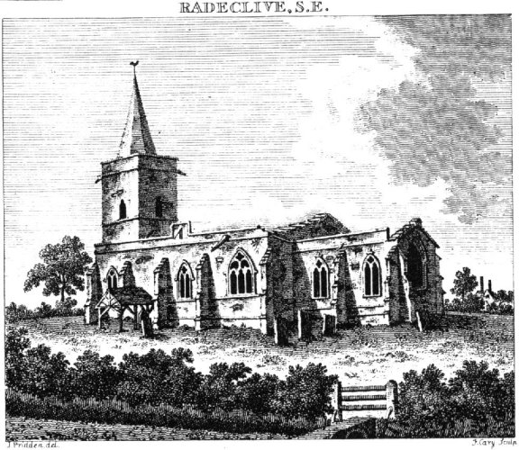
The first reference that we find to our Warren family is in Ratcliffe Culey, Leicestershire with the marriage of Thomas Warren to Ann Winters in October 1735. Although the marriage took place in Ratcliffe Culey, we believe that the Warren family were settled in neighbouring Sheepy Magna as this is where Thomas and Anne had their first children baptised in 1738 and 1740. In 1742 the pair then apply for, and are granted, a settlement certificate to be legally settled in Ratcliffe Culey.

Once settled in Ratcliffe Culey the family grows to six children, the youngest being the only boy, William. William was baptised in May 1751 and married to Mary Parkes in December 1777. John Warren was born in Ratcliffe Culey and baptised there in March 1786. He was the youngest son of William and Mary Warren. We know nothing of William's occupation. It is likely that he was a skilled craftsman and his son went on to become a craftsman in his own right. John married Alice Kirk of Thrussington in 1811 and the family settled in Ashby de la Zouch where John is recorded as a wheelwright and a coachmaker. Whilst living in Ashby the couple had two sons Thomas, born in 1814, and John, born in 1815.
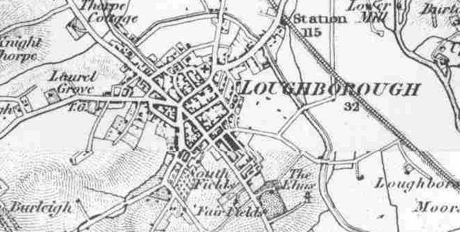
By 1820 the family had moved to Loughborough and John had established his business there. The couple had six further children between 1820 and 1831. John Warren Snr, continued to work as a Coachmaker establishing his name in the town from his High Street and High Gate premises. This he continued to do until his death in 1841.
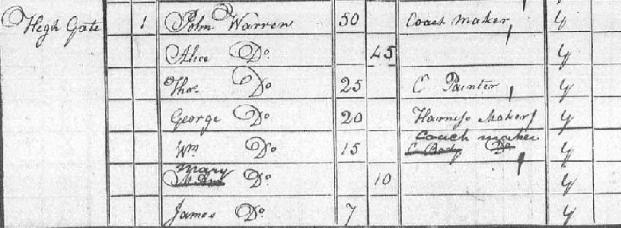
At the time of his death John's sons were already employed in coachmaking. John's second son, John Warren Jnr, had married Mary Ann Harvey in 1836 and the couple were living in Baxter Gate. John Jnr's brothers including Thomas, George and William were still living at home and all had developed different coachmaking skills. For a time the business was managed by Alice in her name until 1854 when Thomas and John took over the business as a partnership and ran it as such for 9 years until 1863, both brothers being described as Master Coachmakers.
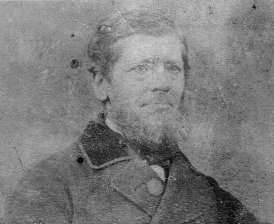
The family business continued to operate out of the High Street premises whilst John Jnr and his wife Mary Ann established their family at their Baxter Gate home. Between 1837 and 1848 they had 5 children, their eldest son being Henry Warren, born in September 1841. However in 1848, Mary Ann Warren tragically died leaving John to care for the children, the oldest of which was 12 and the youngest still a baby. John soon met Mary Bennett and married her in 1852. Between 1853 and 1869 they had 9 children.
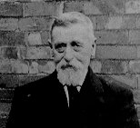
During this period Thomas continued to live at the High Street premises, having married Eleanor Munton in 1841. In the meantime their widowed mother, Alice, moved to Woodgate to live with her daughter Mary Ann and her husband William Dextor. Thomas and Eleanor had 8 children between 1843 and 1858 and again all of the male children were apprenticed into the business.
By 1863 John had established his own business and had broken away from Thomas. We'll never know whether this was a natural development or whether there was a rift between the brothers. John acquired a business premises at 48 Baxter Gate and he and the family moved there from Wellington Road. The business operated as John Warren Coachbuilders and later as John Warren and Son.
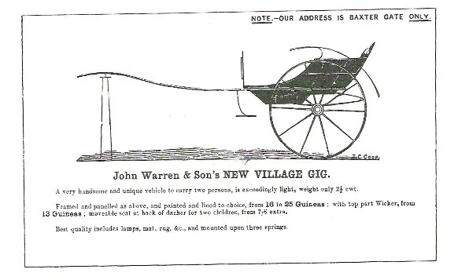
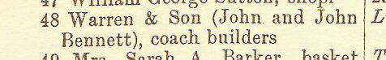
John Warren continued to establish his name until his death in May 1891. The business then appears to have been inherited by the eldest son of his second marriage, John Bennett Warren. John's eldest son from his first marriage, Henry, had already moved away from Loughborough and had worked as a coachbuilder in Leicester and Newport Pagnell, settling back in Loughborough by 1881. Henry had married Louisa Ward in 1864, about the same time as his father had founded his own business. At the time the couple were living in Leicester and had there first three children there, including Lucy Warren their first daughter, Henry and John. From Leicester they moved to Newport Pagnell where Henry's brother William was working. During this period they had 2 more children, Albert Warren and Nellie.
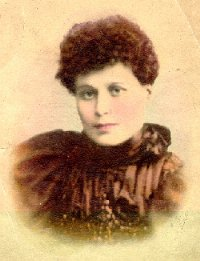
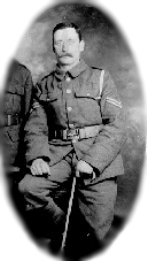
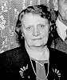
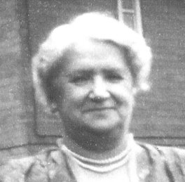
By 1881 Henry, Louisa and family had returned to Loughborough and Henry was probably employed in the family business again. Between 1881 and 1891 they had 3 more children, Thomas, Mabel and Louisa. Henry died in 1894, just three years after his father.
Read more about the Warren's and Coachbuilding in Loughborough .
Current Research : No trace of Thomas in Leicestershire. May be that the Warrens came into Leicestershire from over the border in Warwickshire.
Click here to return to the Warren homepage